Click me to go back!
Elliot
Warren
Since 2009, I have been tinkering with computers and electronics. I love building custom PCs, programming microcontrollers, and learning about how technology works.
Over my life, I have built several custom PCs, including my current main rig which I built in 2021. I also enjoy programming microcontrollers like Arduino and Raspberry Pi to create fun and useful projects.
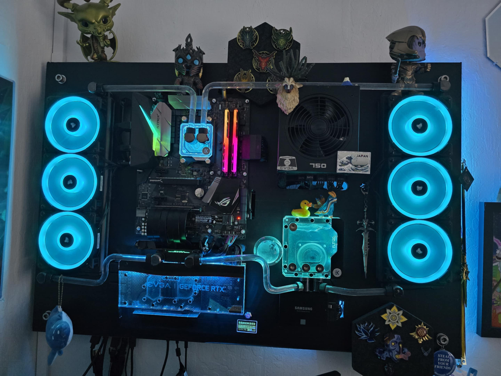

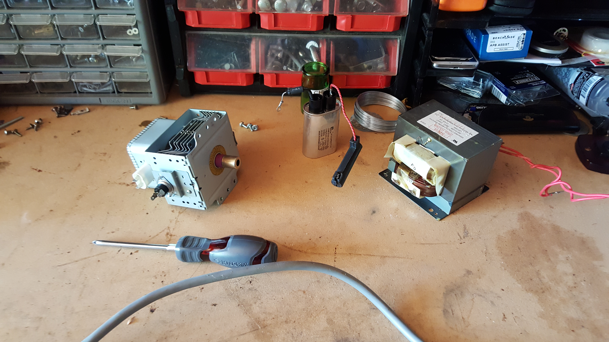
I am a huge aquarium nerd! I have been keeping aquariums for several years now, and I currently have a 55-gallon freshwater tank and a 5-gallon nano tank, and two 3-gallon nano-shrimp tanks.
I got my first 55-gallon tank when I was about 14, and it showed me the joy of keeping fish and keeping balance in a small ecosystem.
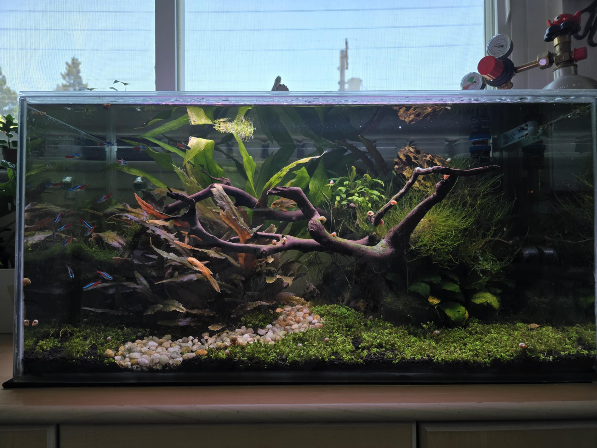
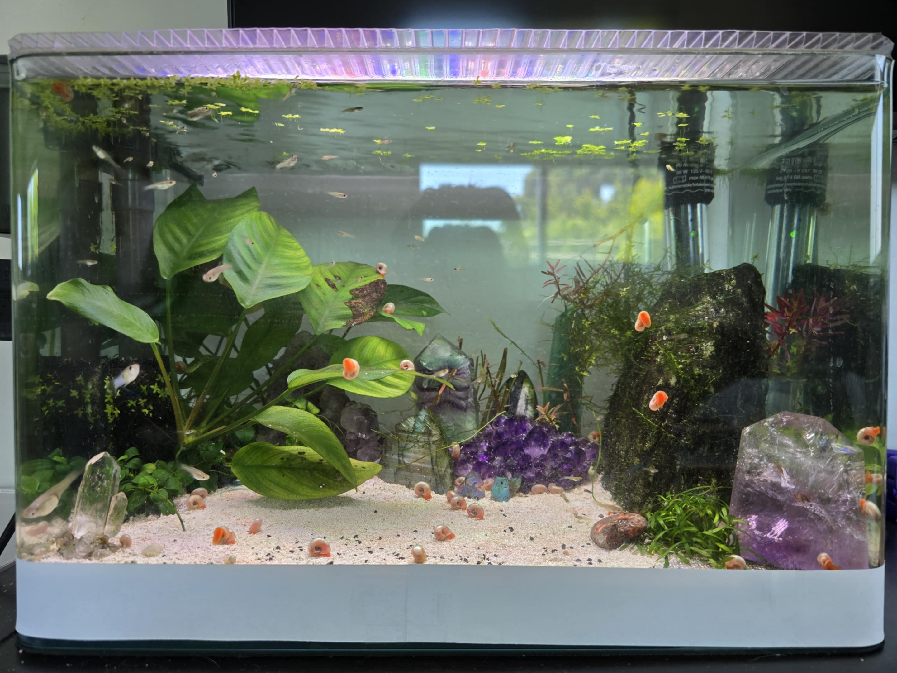
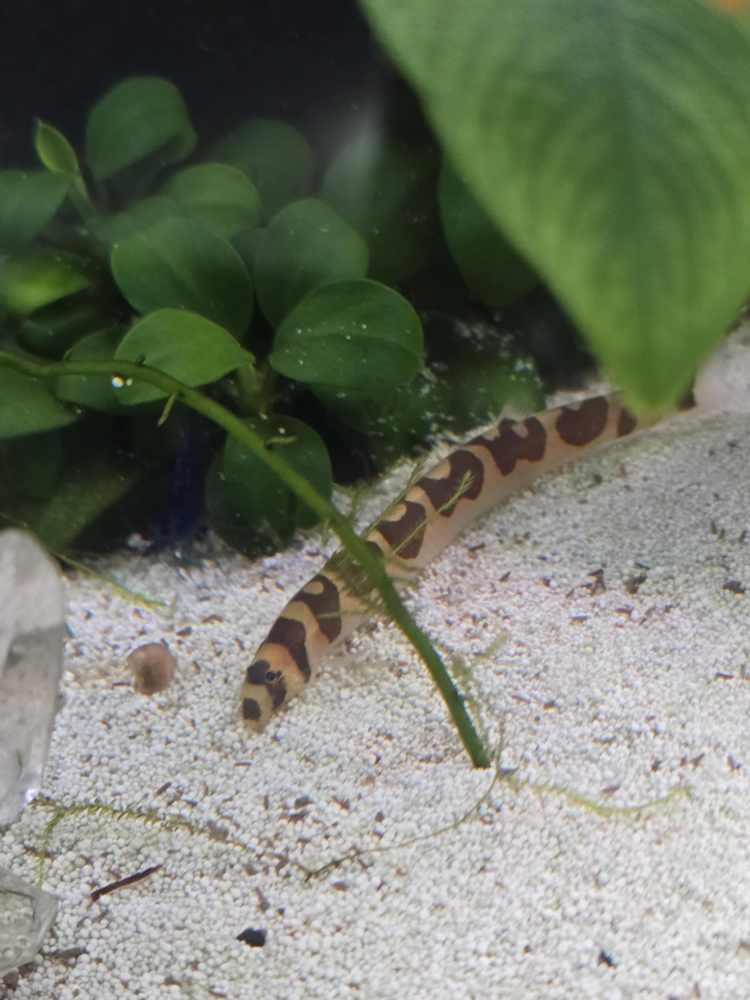
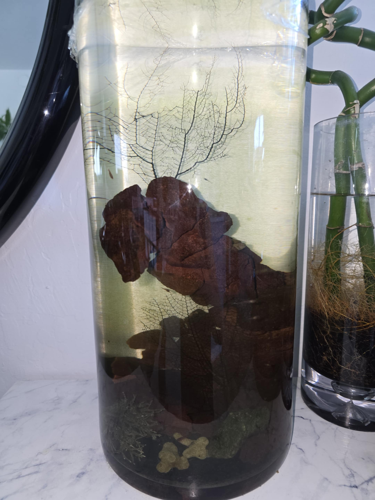
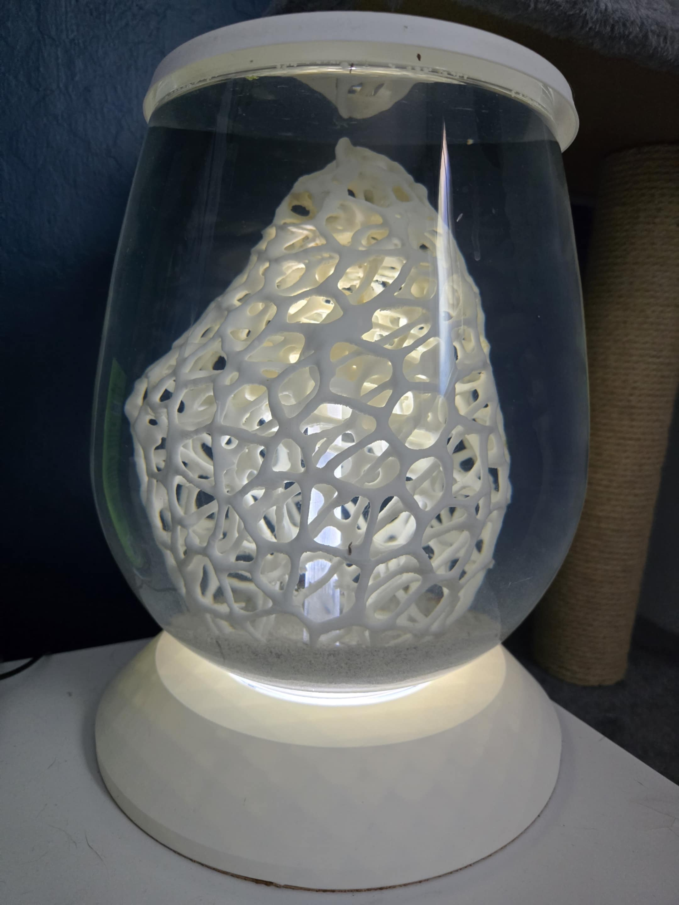
I have always had pets in my life. Currently, I have two cats: Tora, Maru, and a dog: Kota. Tora is a reclusive tabby, but exclusively cuddles with me. Maru is a curious and friendly Siamese who will play fetch! Kota is a mineature poodle who enjoys roughousing and treats.
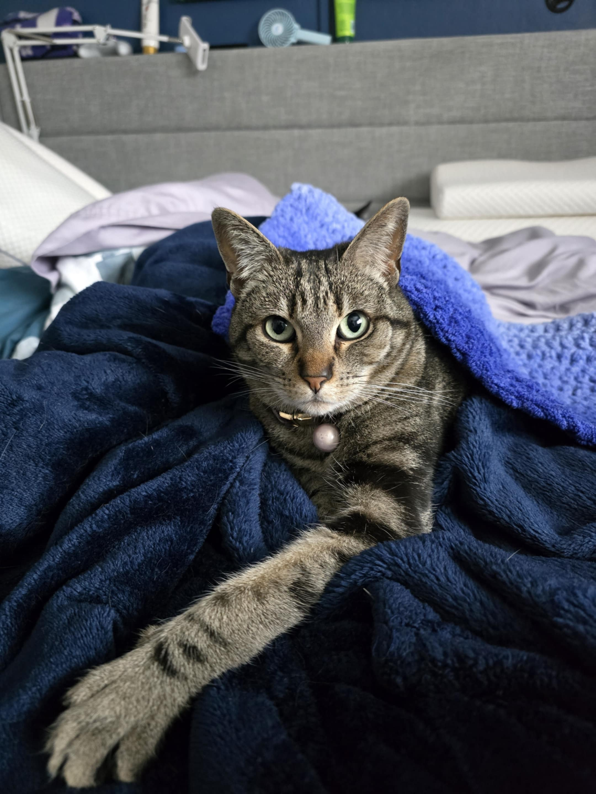
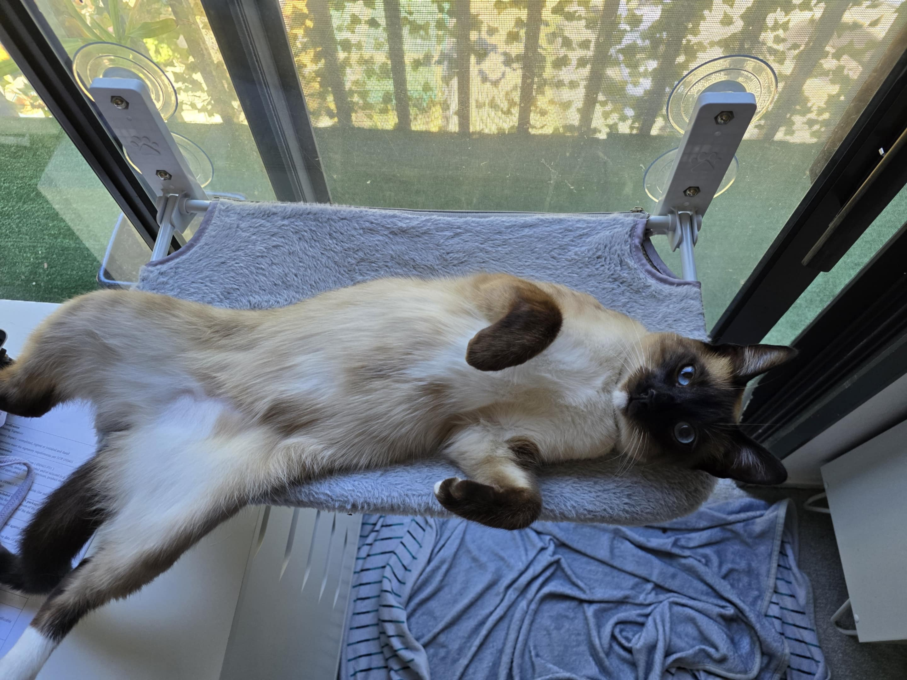
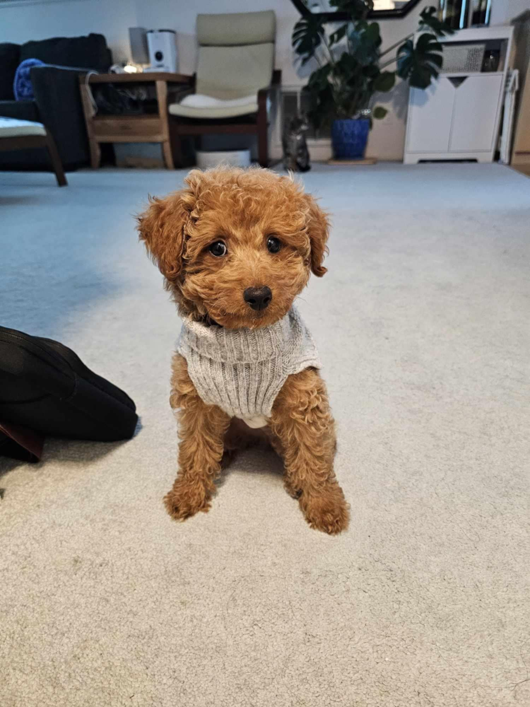
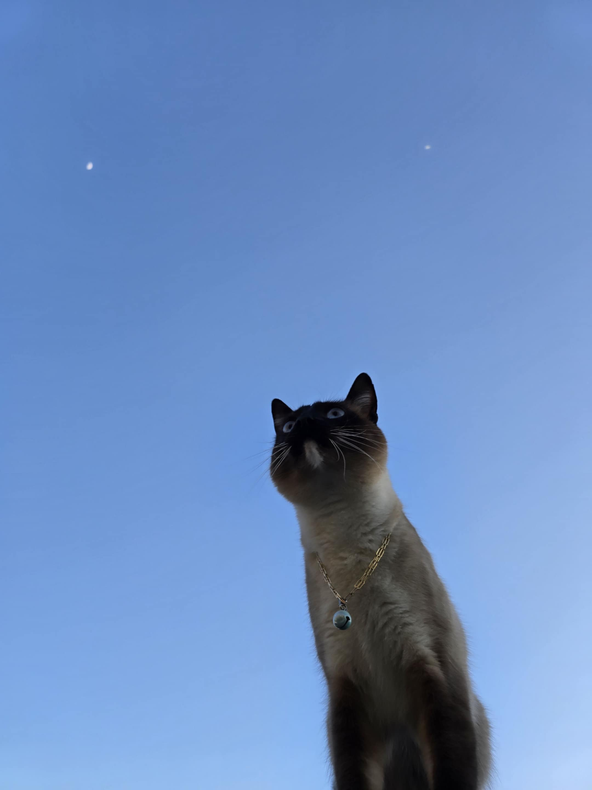